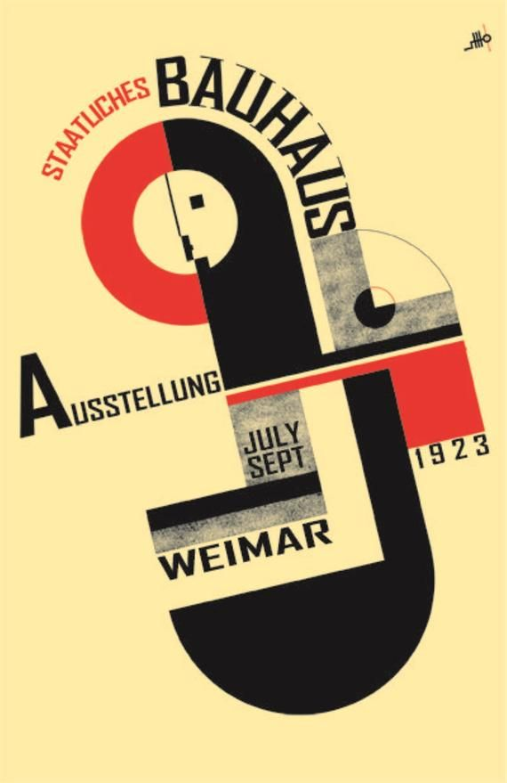

Bauhaus
Key points
- Bauhaus is a german art school that is operated from 1919 to 1933
- The school combined crafts into fine arts
- It is famous for which attempted to unify individual artistic vision with the principles of mass production and emphasis on function
- Founded by architect Walter Gropius
Additional information
Concepts and Terms
Several specific features are identified in the Bauhaus forms and shapes:
simple geometric shapes like rectangles and spheres, without elaborate decorations.
Buildings, furniture, and fonts often feature rounded corners, sometimes rounded walls, or curved chrome pipes.
Some buildings are characterized by rectangular features, for example protruding balconies with flat, chunky railings facing the street, and long banks of windows.
Some outlines can be defined as a tool for creating an ideal form, which is the basis of the architectural concept.

| The school sites |
| Weimar |
Dessau |
| Bernau |